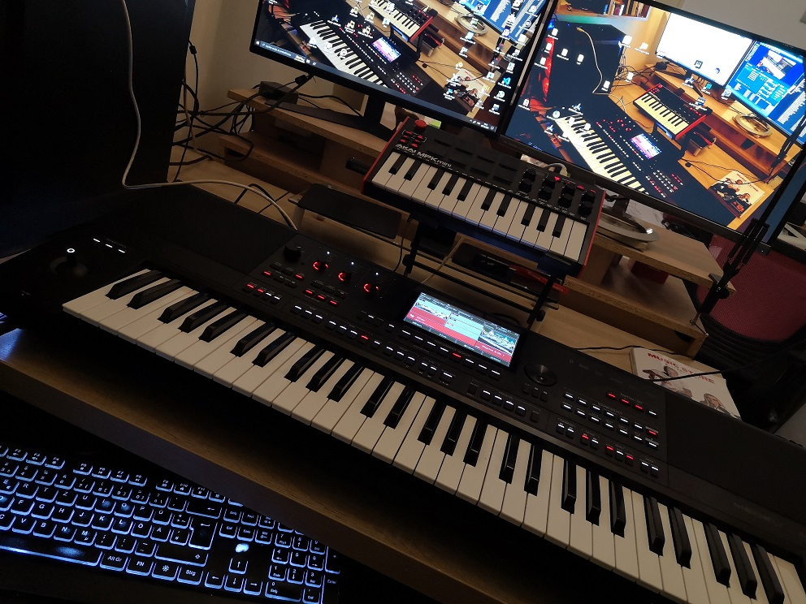

Dobrodošli u Medeli AKX10 sekciju
Medeli AKX10 je aranžerska radna stanica iz Arranger Pro serije: 61 osjetljivih tipki (PTK), 7" touch ekran, 256-glasna polifonija i ugrađeni zvučnici (2×15 W + 2×25 W). Namijenjena je sviranju uživo, izradi vlastitih stilova i zvukova te radu s MIDI-jem i audio datotekama.
Odaberite kategoriju s lijeve strane da saznate više o određenoj temi vezanoj za Medeli AKX10.
Što AKX10 može:
- Zvukovi – oko 1100 preset Voice-ova, 256 GM2 zvukova i do 500 User zvukova
- Stilovi – 280 preset ritmova i do 1000 User stilova, uz Style Creator
- Slojevi – L + R1 + R2 + R3 (split i layer u isto vrijeme)
- Kontrola stila – Intro/Ending 1–3, Main/Fill A–D, Break, Sync Start/Stop, Fade, Q.S./O.T.S.
- Snimanje – 16-kanalni sequencer (do 500 pjesama) i audio snimanje MP3/WAV
- Povezivanje – USB MIDI/Audio, MIDI In/Out, Bluetooth MIDI i audio, mikrofon s vocoderom i vokalnom harmonijom
- Ekspanzija – oko 768 MB interne memorije za vlastite sample-e, zvukove i ritmove
Što ćete naučiti:
- Osnove rada – panel, ekran, stilovi, zvukovi i sviranje s aranžmanom
- Izrada stylova – Style Creator, sekcije i User stilovi za Medeli
- Izrada zvukova – Voice, Creative Expression, layer i split
- Sound Edit – uređivanje filtera, envelopea i efekata
- Performance Memory – spremanje kompletnog seta za nastup
- Sempliranje i ekspanzija – učitavanje vlastitih uzoraka i ritmova
- MIDI postavke – USB, DIN MIDI i Bluetooth
- Napredne funkcije – Phrase Pad, Harmony, Arpeggiator, Slicer, mikrofon
Style Creator
Gradite vlastite ritmove: Intro, Main, Fill, Break i Ending, pa ih spremite kao User Style.
Sound Edit
Prilagodite Voice, DSP efekte, EQ i kompresor da zvuk sjedi u aranžmanu.
Live nastup
Mikrofon, vocoder, vokalna harmonija, joystick, Phrase Pad i svjetlo koje prati svirku.